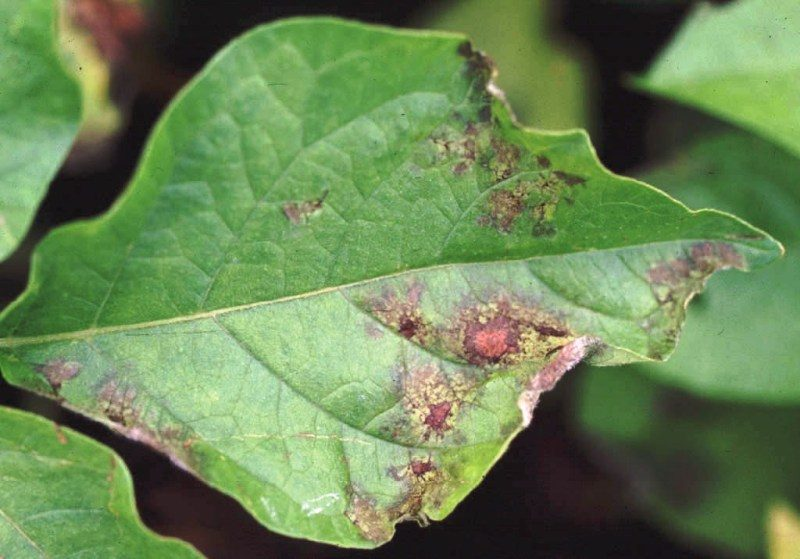

आलू का पिछेती झुलसाPotato Late Blight
Phytophthora infestans · Phytophthoraceae · FNG-0021

- Scientific name वैज्ञानिक नाम
- Phytophthora infestans (E.J. Butler) Sparrow
- Family कुल
- Phytophthoraceae
- Hindi हिंदी
- आलू का पिछेती झुलसा
- Local names स्थानीय नाम
- aalu ka picheti jhulsa, aalu jhulsa, jhulsa rog, late blight
- Status here यहाँ की स्थिति
- naturalized
- Movement आवागमन
- Resident, here all year
- IUCN IUCN
- not evaluated
- Review समीक्षा
- audited and independently read
When to look कब देखें
Expected mainly in January, February, March. मुख्यतः जनवरी, फ़रवरी, मार्च में अपेक्षित।
Uses and possibilities उपयोग और संभावनाएँ
Drawn from the documented uses in the profile below, where each is labelled traditional, current or a research lead. All uses →
आलू का पिछेती झुलसा / Potato Late Blight
Phytophthora infestans (E.J. Butler) Sparrow — Phytophthoraceae (Kingdom: Chromista — a water mold, not a true fungus)
आलू का पिछेती झुलसा (देरी से आने वाली पत्तियों का रोग) — आलू की सबसे खतरनाक बीमारी, जो सर्दियों में ठंडी, नम हवा में सिर्फ एक-दो दिनों में पूरे खेत को भूरा-काला कर सकती है। पत्तियाँ पानी-भीगी, पीली-भूरी पड़ जाती हैं, पूरी की पूरी सड़ जाती हैं। अगर रोग जमीन में उतर जाए तो कंद (आलू) भी सड़ जाते हैं और भंडार में बीमारी फैल जाती है। यह रोग फिंगर सड़न (Finger rot) कहलाता है। दुनिया का यह सबसे बड़ा आलू रोग है। अच्छी किस्मों और दवाइयों से इसे नियंत्रित किया जा सकता है।
Quick Identification त्वरित पहचान
| Feature | Description |
|---|---|
| Leaf lesion | Large, water-soaked, dark brown to black patches on leaf blades and stems; irregular shape |
| Lesion margin | Often surrounded by a narrow, pale halo of yellowing tissue |
| Lesion progression | Rapidly expands; entire leaf can blacken within 48–72 hours |
| Stem infection | Brown-black lesions on petioles (leaf stalks) and stems; causes stem collapse |
| Underside of leaf | White, sparse fungal growth (sporangia and sporangiophores) visible only in very humid conditions; distinctive sign when present |
| Tuber symptoms (in field) | Purple-brown or red-brown, sunken lesions on tuber surface; often with concentric rings of discolouration |
| Tuber rot (in storage) | Dry rot, watery rot, or secondary bacterial rot develops; tuber becomes inedible |
| Whole plant symptom | Plant dies rapidly; field appears as if burned or scalded; canopy collapses |
Field tip: Walk through a potato field in January–February. Look for large (5–10 cm), water-soaked, dark brown patches on lower leaves that are rapidly spreading. The halo of yellow around the lesion is distinctive. If you see white, cotton-like growth on the underside of a damp leaf, that is the pathogen's sporangia — a certain diagnosis. Late blight is the most destructive disease in eastern UP potato fields in cool, wet seasons.
हिंदी — कैसे पहचानें: आलू की पत्ती पर बड़े, पानी-भीगे, काले-भूरे दाग, पीले हलके के साथ। बहुत तेज़ी से फैल रहे हों। पत्ती का सिरा मुड़ा-तुड़ा, गीला-काला। जनवरी-फरवरी में, नम मौसम में।
Morphology and Symptomatology आकृति और लक्षण
Pathogen structure (visible with microscope):
| Structure | Appearance |
|---|---|
| Sporangiophore | Unbranched or weakly branched; emerges from stomata (pores) on leaf undersurface |
| Sporangium | Oval or pear-shaped, 50–75 × 35–50 µm; contains infective units (zoospores) |
| Zoospore | Motile, heart-shaped, 10–15 µm; swims in water or wet soil; primary infection agent |
| Oospore | Resting spore, round, thick-walled; survives in infected plant material; overwintering form |
| Growth in culture | White, woolly mycelium; grows in cool conditions (15–20°C) |
Important note: Phytophthora is NOT a fungus but a water mold (oomycete), belonging to the kingdom Chromista (protists). It resembles fungi in appearance and habitat but is evolutionarily distinct. Its cell walls contain cellulose (like plants) rather than chitin (like fungi), which affects fungicide sensitivity.
Disease progression:
- Infection to visible lesion: 3–5 days (under optimal conditions: 12–18°C, >90% humidity, continuous leaf wetness)
- Sporulation: Once lesions mature (48–72 hours), sporangiophores erupt from lesion undersurfaces
- Spore release: In wet conditions, zoospores are released from sporangia and swim in water films on leaves
- Secondary spread: Zoospores cause new infections on adjacent leaves and plants; epidemic develops exponentially in wet weather
Life Cycle / Phenology जीवन चक्र
In eastern UP (winter potato crop: November–March):
| Stage / Month | Event | Notes | |
|---|---|---|---|
| September–October | Seed preparation; infected seed tubers may carry dormant pathogen | Primary inoculum source for lowland plains | |
| November | Planting; early season, cool conditions; disease pressure low | Fungus may be present in seed tubers but dormant | |
| December | [[potato\ | Potato]] plant grows; temperatures cool (15–20°C); early morning dew and mist; conditions becoming favorable | First symptoms may appear on susceptible varieties if infected seed is planted |
| January–February | CRITICAL PERIOD — Cool temperatures (12–18°C), high humidity (>90%), frequent rains or irrigation, prolonged leaf wetness; peak disease pressure | Epidemic develops rapidly. A single rain or irrigation cycle can trigger exponential spread. Disease moves from lower to upper leaves within 1–2 weeks if unchecked. | |
| March | Potato approaching physiological maturity; tuber bulking; if disease reaches tubers, rot begins | Tuber infection becomes apparent during harvest or storage | |
| April–May | Harvest; tubers dug; infected tubers show external lesions and internal rot | Rot may spread to adjacent sound tubers during storage if conditions stay wet | |
| May–October (dry season) | Pathogen survives as oospores in infected potato seed, volunteer plants, and crop residue in soil | No active infection in lowland plains; pathogen dormant until next cool season | |
| Year-round (hills) | In cooler regions (Himalayas, Nilgiris), disease is endemic and destructive in every season | Continuous cycle of infection; seed tubers from hills are major inoculum source for plains |
Weather trigger: The most severe epidemics occur when:
- Cool temperature 12–18°C (ideal for pathogen)
- Relative humidity >90% for extended periods
- Leaf wetness >12 hours/day (from rain, irrigation or dew)
- Continued cool, wet weather over several weeks (allows multiple infection cycles)
हिंदी — जीवन चक्र: संक्रमित बीज से शुरू। जनवरी-फरवरी की ठंड और नमी में खूब फैलता है। पत्तियों से कंद तक पहुँचता है; भंडार में सड़न होती है। गर्मियों में सो जाता है।
Ecology and Substrate पारिस्थितिकी और आधार
Obligate plant pathogen: Phytophthora infestans requires living or freshly dead plant tissue for growth. It cannot survive in soil without host material.
Water dependency: Unlike many fungi, Phytophthora requires free water (high humidity or standing water) for sporulation and spore dispersal. The zoospores are motile in water.
Temperature and humidity requirements:
- Optimal infection: 12–18°C, relative humidity >95%, leaf wetness ≥12 hours
- Sporulation: Requires cool (15–20°C) and very high humidity (>95%)
- Stress to pathogen: >25°C inhibits sporulation; >30°C kills zoospores
- Rapid growth: Cold, wet conditions (like mountain monsoon or winter plains rains) trigger epidemics
Host specificity: Primarily attacks potato (Solanum tuberosum); can occasionally infect tomato (Solanum lycopersicum) and other Solanum species but is not virulent on them.
Variability: Multiple physiologic races and mating types exist globally; Indian strains may differ in virulence and fungicide sensitivity.
Agricultural / Human Relevance कृषि प्रासंगिकता
Economic impact:
- Yield loss: 20–100% depending on variety susceptibility and disease onset timing
- Tuber quality loss: Infected tubers are unsaleable and unmarketable; rot continues in storage
- India context: Late blight is endemic in hill potato-growing regions (Himalayas, Nilgiris); epidemics occur in plains during cool, wet seasons
- Global importance: Caused the Irish Famine of 1845–1852; remains the most damaging potato disease worldwide
Management — in order of priority:
- Resistant varieties (MOST EFFECTIVE):
- Recommended in Uttar Pradesh: Kufri Himalaya, Kufri Gaurav, Kufri Safed, Kufri Chandramukhi, Kufri Sindhuri (all have moderate to high resistance)
- Avoid highly susceptible older varieties: Kufri Badshah, Kufri Swarna
- Farmers should obtain seed from certified sources (these are potato seed farms, not traditional seed savers)
- Varietal rotation: New resistant varieties should be deployed every 5–7 years to prevent virulence buildup
- Seed management:
- Seed source: Use certified, disease-free seed from recognized potato seed farms (ICAR institutions or state seed agencies)
- Roguing: During crop growth, remove any plants showing early symptoms to prevent disease spread
- Seed treatment: Some protocols recommend seed dressing or hot-water treatment, but this is rarely done in smallholder farms
- Cultural practices:
- Timing: Avoid late planting in cool regions; plant early to escape peak disease pressure
- Spacing: Adequate spacing reduces humidity within crop canopy
- Nitrogen fertiliser: Excessive nitrogen increases susceptibility; apply recommended amount
- Weed and volunteer management: Remove volunteer potato plants and weeds that harbor the pathogen
- Crop residue: Burn or bury infected crop residue; do not leave it in the field or compost it
- Tuber handling: Avoid bruising during harvest (wounds provide entry for secondary rot organisms)
- Fungicide spray (supplementary, not primary):
- Fungicide choice: Mancozeb (non-systemic, multisite) or Metalaxyl + Mancozeb (systemic + non-systemic combination); Cymoxanil + Mancozeb (newer, more efficacious)
- Spray timing: Monitor crops in December–January; START SPRAY at first sign of disease or when weather forecast predicts cool, wet conditions
- Spray frequency: Every 7–10 days during risk period (January–February); 3–5 sprays typically required
- Cost: ₹400–600 per hectare per spray; economical for high-value potato (seed potato, table stock)
- Caution: Fungicide resistance can develop with repeated use; rotate fungicide classes; Metalaxyl resistance is documented in India
- Integrated approach for farmers:
- Grow resistant variety (primary control)
- Use certified disease-free seed
- Maintain field sanitation (remove previous crop residue)
- Monitor for early symptoms (December onwards); spray at first sign if growing susceptible variety
- Avoid excess moisture; manage irrigation (avoid late-stage irrigation that keeps leaves wet at night)
Government support:
- Uttar Pradesh Agriculture Department promotes late-blight-resistant varieties and issues disease alerts during monsoon and cool seasons
- Seed production programs aim to increase availability of disease-free seed
हिंदी — रोकथाम: पहले रोधक किस्म बोओ। अच्छा बीज बोओ (प्रमाणित स्रोत से)। जनवरी में नज़र रखो। रोग दिख जाए तो छिड़काव करो (Mancozeb या Metalaxyl + Mancozeb)। बीमार कंद भंडार में न रखो।
Expected Locally स्थानीय रूप से अपेक्षित
Not a field record. Written from published accounts for eastern Uttar Pradesh. No confirmed local sighting yet — if you have seen it, that is what the atlas needs.
अभी तक स्थानीय पुष्टि नहीं। यह विवरण प्रकाशित स्रोतों से है, किसी अवलोकन से नहीं।
Potato late blight is expected in Basti and Ayodhya districts wherever potato is cultivated, particularly in the rabi (winter) crop (November–March). Epidemics are most severe when:
- Cool temperatures (12–18°C) persist during January–February
- Above-average rainfall or frequent irrigation during this period
- Susceptible varieties are grown (Kufri Badshah, Kufri Swarna)
- Infected seed is planted (especially seed from endemic hill regions)
In years with above-average winter rainfall and temperatures favoring the pathogen, late blight can cause yield losses of 30–80% or total crop loss in susceptible varieties. Resistant varieties (Kufri Himalaya, Kufri Gaurav) remain largely unaffected even in high-risk years. Early-planted, resistant varieties are most successful in Basti district.
Distribution वितरण
Global range: Found wherever potato is grown in cool, moist regions. Particularly severe in the Andes (origin of both potato and pathogen), Europe, and tropical highlands.
In India: Endemic in potato-growing hills (Himalayas, Nilgiris, parts of Western Ghats); epidemic risk in cool-season plains during monsoon and winter.
In Uttar Pradesh: Present in all potato-growing regions. Eastern UP (Basti, Gorakhpur) experiences significant disease pressure in rabi (winter) crops during cool, wet seasons; risk is highest when temperatures are 12–18°C and humidity is high.
In Basti district / eastern UP: Expected in every winter potato field. High-risk years (cool, wet January–February) result in severe epidemics in susceptible varieties; resistant varieties remain relatively clean.
Research Questions शोध प्रश्न
- Which potato varieties are grown in your village, and which show the most late blight? / आपके गाँव में कौन-सी आलू की किस्मों में सबसे ज़्यादा झुलसा लगता है? — Survey 10 farmers; note variety name, planting date, and Jan–Feb blight severity (0–100%).
- When does late blight first appear in your village potato crops each year? — Record the date of first visible symptoms for three consecutive seasons; correlate with temperature and rainfall.
- Does early-planted potato (Oct 15) show less blight than late-planted (Nov 15) in your village? — Compare two farmers' fields (same variety, different planting dates).
- If a farmer grows a resistant variety adjacent to a susceptible variety, does the resistant one still get infected from spore drift? — Observe symptom spread between adjacent fields.
- Can farmers access certified disease-free seed potato from state or private sources, and at what price? — Contact ICAR and state seed agencies; compare with farmer-saved seed.
Similar Species मिलती-जुलती प्रजातियाँ
| Disease | How to tell apart | हिंदी |
|---|---|---|
| Early Blight (Alternaria solani) | Small, round, concentrically-ringed brown spots; NOT water-soaked; target-like appearance; occurs on all ages of leaves | छोटे, गोल, धारीदार दाग; पुरानी पत्तियों पर भी |
| Bacterial Wilt (Ralstonia solanacearum) | Wilting of stems; yellowing; no lesions on leaves; plant collapses without brown patches | पूरा पत्ता पीला हो जाता है, विल्ट |
| Fusarium Wilt (Fusarium spp.) | Wilting, browning of vascular tissue; no surface lesions | अंदर भूरा, बाहर से नहीं दिखता |
Field rule: Large (5–10 cm), water-soaked, dark brown patches on potato leaf, spreading rapidly, with yellow halo, in cool, wet January–February = late blight. Every other potato disease is either smaller, differently patterned, or less destructive in eastern UP.
Taxonomy & Classification वर्गीकरण
Original description. Phytophthora infestans was described by E.J. Butler as Phytophthora infestans in 1911 in Fungi of India. It was first identified as the cause of the Irish Potato Famine by the Berkeley family in 1845, though the scientific name was not firmly established until later.
Subspecies. No subspecies are formally recognized; however, multiple clonal lineages (genotypes) and mating types exist. In India, the dominant lineage is known as lineage 1 (also called the "classic" lineage), though more recent immigrant lineages are being detected.
Family and order placement. Order Peronosporales, family Phytophthoraceae. Phytophthora is a genus of oomycetes (water molds), not true fungi.
Kingdom note — Chromista: Phytophthora belongs to the kingdom Chromista (also called Stramenopila, Heterokonta). This group is evolutionarily closer to algae and plants than to fungi. Oomycetes have cellulose-based cell walls (like plants) rather than chitin-based walls (like true fungi), which explains their different biochemistry and fungicide sensitivity.
Phylogenetic notes: Phytophthora originated in East Asia, likely on wild Solanum species; it jumped to cultivated potato in the Andes and was subsequently carried to Europe and worldwide. The Irish Famine epidemic was caused by a single clonal genotype; modern epidemics are more complex, with multiple genotypes present.
IUCN status rationale. Not evaluated. As an obligate plant pathogen, its conservation status is not applicable. Its management is an agricultural priority.
Photo Gallery फोटो गैलरी
Photos needed आवश्यक फोटो
- [ ] Potato leaf showing large, water-soaked, dark brown lesion with yellow halo (पानी-भीगे दाग)
- [ ] Close-up of leaf underside showing white, fuzzy sporangia (सफ़ेद फफूंद, अगर दिखे)
- [ ] Infected potato tuber showing rot (कंद पर सड़न)
No photos yet — add field photos to media/species/late_blight/ and run node scripts/sync_photos.js.
References संदर्भ
- Butler, E.J. (1911). Fungi of India. Imperial Agricultural Research Institute, Delhi. [original description]
- Hohl, H.R. & Iselin, K. (1984). Strains of Phytophthora infestans differing in morphology and mating type. Transactions of the British Mycological Society 82(3): 489–499.
- Fry, W.E. (1989). Principles of Plant Disease Management. Academic Press, New York. [comprehensive review]
- Singh, H. & Sharma, J. (2007). Late Blight of Potato and its Management. ICAR-CPRI, Shimla.
- Indian Council of Agricultural Research — Central Potato Research Institute (2021). Recommended Potato Varieties for Eastern Uttar Pradesh. ICAR-CPRI, Shimla.
- GBIF Occurrence Data — Phytophthora infestans, India (2026).
Source file: species/fungi/molds/late_blight.md